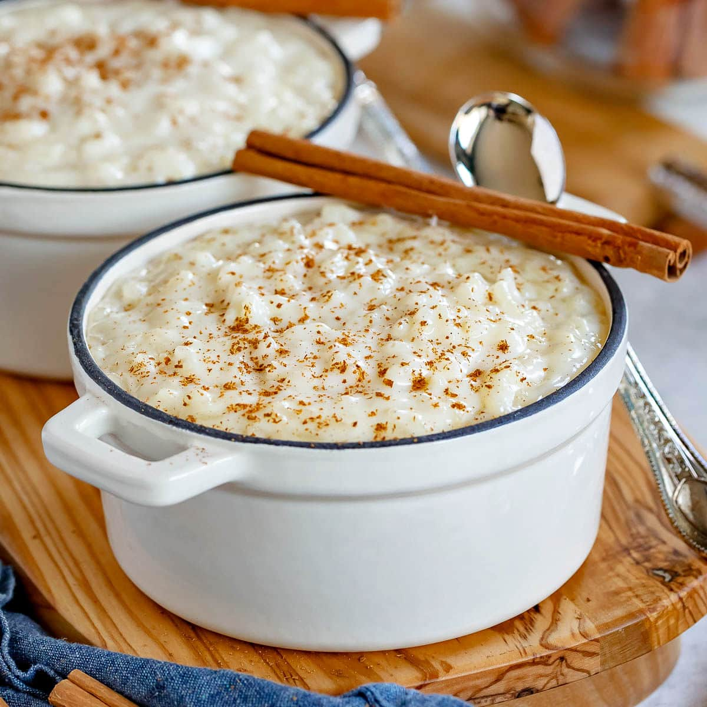

Rice Pudding
Home

Momma's Creamy Rice Pudding
This rice pudding recipe will bring you back to mom's house! The starch of the arborio rice mixes PERFECTLY with the velvety texture of whole milk! Whether you enjoy it warm or cold, you're sure to come back for seconds (or thirds... it's okay, we won't tell!)
Ingredients
- Ground Cinnamon (optional)
Steps
- Combine milk, rice, sugar, water, and cinnamon sticks to a large saucepan over medium heat.
- Stir often until mixture reaches a rolling boil. Reduce heat.
- Cook for 25-30 minutes, or until rice is tender.
- Remove saucepan from heat and stir in vanilla. Serve warm or refigerate and enjoy cold.